フラクタル (fractal) について、名のあるフラクタル図形を知っている限り列挙。
Wikimedia CommonsのFractalのギャラリーでほとんど網羅されてますけど…。
曲線に対して再帰的処理を施したものは特に再帰曲線と呼ばれる。
コッホ曲線を3つ繋げた図形。内部の面積は有限だが境界線の長さは無限大。
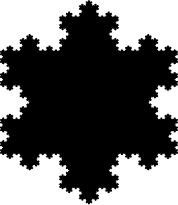
Vicsek fractalの一部。
ミンコフスキーのソーセージ(Minkowski sausage)とも。
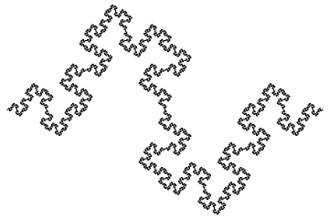
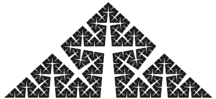
0～1の実数を3進数で表現したとき、その文字列の中に1を含まない点（0.200202223など）の集合として定義することができる。そのため、このように定義した場合はカントールの3進集合（Cantor ternary set）とも呼ばれる。
cf) 悪魔の階段（Devil's staircase、カントール関数（Cantor function））
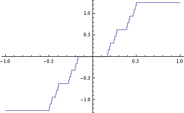カントール集合の2次元への拡張。
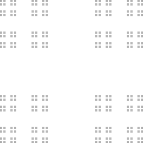カントールの塵の補集合
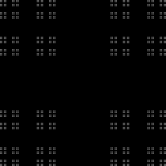「シェルピンスキーのガスケット」や「シルピンスキーのギャスケット」、「シェルピンスキーの三角形（Sierpiński triangle）」などとも。
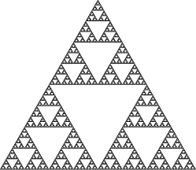点（図示では円）を初期集合として表すこともできる。
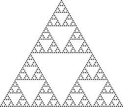線分を初期集合として表すこともできる。
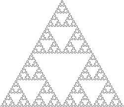三角形を初期集合として表すこともできる。これが一番よく知られている方法である。

ビットマップに合う簡単な形としてせん断された状態で描かれることもある。下図はセルオートマトンのルール60である。
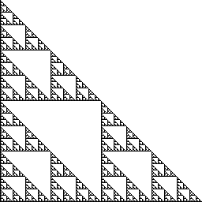下図のセルオートマトンのルール90としても知られている。
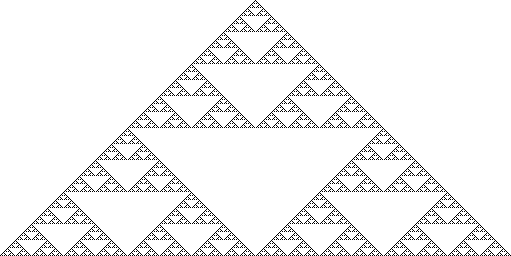シェルピンスキーのギャスケットの外形が正三角形であるのに対し、こちらは正方形。
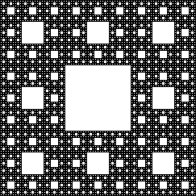シェルピンスキーのカーペットの3次元拡張。
「Vicsek snowflake」や「box fractal」、「quadraflake」とも。
X字(saltire)の作り方と+字(cross)の作り方がある。
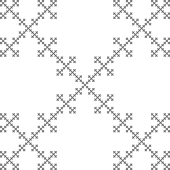 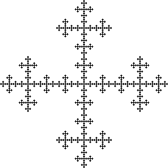n=3でシェルピンスキーのギャスケット、n=4でVicsek fractalになる。
ビットマップに合う簡単な形としてせん断された状態でも描ける。
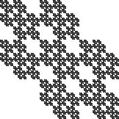平面充填曲線としては以下のような曲線が挙げられる。
極限は平面図形そのものであるため、フラクタルの定義からは外れるが、自己相似性は有するためフラクタル図形として数えられることが多い。
これも空間充填曲線の一種である。境界線のハウスドルフ次元は非整数である。
Heighway dragon、Harter–Heighway dragon、Jurassic Park dragonとも。
Twindragon曲線（Davis-Knuth dragon）は2つのドラゴン曲線を点対称に繋ぎ合わせた形であり、複素数を i -1 進数で表したときに見つけられる形である。
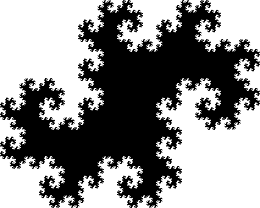派生形としてTerdragon曲線もある。
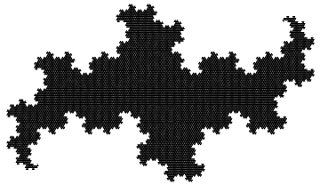ドラゴン曲線と似た方法で作られ、Lévy dragonとも呼ばれる。（個人的にはあまり好きじゃないかたち…。）

名前を知っている方がいればご一報ください。

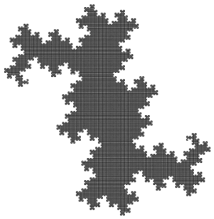
海外ではブラマンジェ曲線（blancmange curve）として知られている。
フラクタルについての解説がわかりやすい。（最近更新してないみたいだけど…。）フリーソフトのSwingCurveがお薦め！